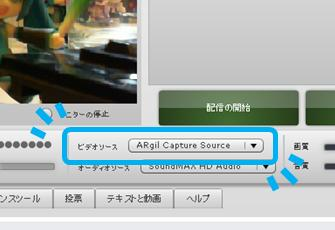

とりあえず公開版ですのでドキュメントなどは作り途中です。ご了承ください。
|
 |
ycaptureとは、WindowsのVideo Capture Sourceのような振る舞いをするDLL(の基本ソース)です。このDLLを使用すると、あたかもビデオキャプチャデバイスのように、任意のプログラムからビデオデータを供給することができます。 このDLLを利用すれば、YouTubeやUstreamのような、Webカメラから配信することを想定したツールで任意のビデオデータを利用することができるようになります。 もともと、ARgilの実行経過を（スクリーンショット撮影ツールのようなものを使用せずに）配信するために作成したものです。もし何かのお役に立てればと思い公開しました。マニュアル等は不十分な点が多いですが、さほど大きくないプログラムですのでコードの断片など参考になれば。 |
ycaptureはソースコードによる提供のみとなります。利用用途に応じて書き換え、ビルドしてお使いください。
このライブラリはMIT Licence(日本語訳)に基づき配布をおこなっています。
もし使用してくださる方がおられる場合は、以下の点にご注意ください。
実装にあたってはStack Overflow、特にThe March Hare's web siteといった情報源に非常に助けられました。より詳しく知りたい場合はこれらのサイトを参考にしてください。
変更点(0.1.0→0.1.1)：
過去のバージョン：
ycapture.dllが提供するVideo Capture Sourceと画像供給処理の実行順序などに特に制限はありません。ycapture.hの定義に従いオブジェクトを生成し、これらを共有して処理を行ないます。
ycapture.dllの上書きなどができない場合は、ブラウザなどがDLLへの参照を保持してしまっている可能性があります。ブラウザの終了などで対処してください。